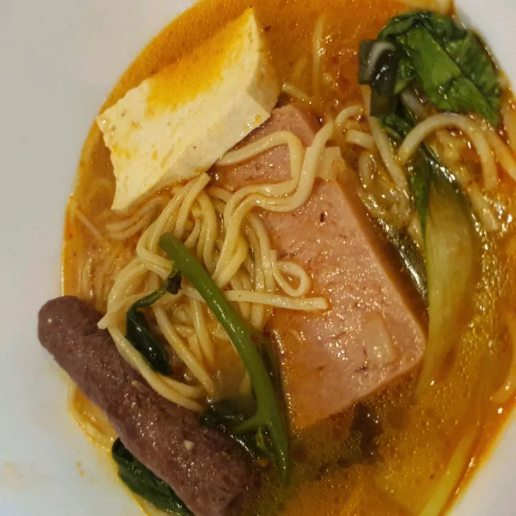

budaejjigae

This dish started after the Korean War when food was in short supply.
Canned ham, hot dogs, and beans were taken from American military bases and mixed with traditional Korean kimchi, vegetables, noodles, and spicy seasonings
to create a delicious spicy and hearty stew.
Ingredients
- 1 (12 oz) can fully cooked luncheon meat (SPAM), sliced
- 14 ounces smoked sausage, sliced
- 1 large onion, sliced
- 6 ounces kimchi
- 1/4 cup Korean red pepper powder
- 3 tablespoons soy sauce
- 3 tablespoons Korean hot pepper paste
- 5 cloves garlic, minced
- 1 pinch ground black pepper
- 1 bunch green onions, chopped
- 2 (32 oz) containers chicken broth
- 7 3/4 ounces ramen noodles
- 1 slice American cheese (Optional)
Steps
- Divide luncheon meat into 2 piles on either side of a stock pot. Layer sausage, onion, and kimchi on top, leaving an empty space in the center of the pot.
- Mix red pepper powder, soy sauce, gochujang, garlic, and black pepper together in a small bowl; pour into the center of the pot.
Sprinkle in green onion. Pour in chicken broth; bring to a boil. Reduce heat and simmer stew, stirring occasionally, until flavors combine, about 10 minutes.
- Bring a pot of water to a boil; add ramen noodles. Cook and stir until partially cooked and softened, about 2 minutes.
Drain; stir into stew. Cook and stir until ramen noodles are tender but firm to the bite, about 5 minutes. Top stew with American cheese.